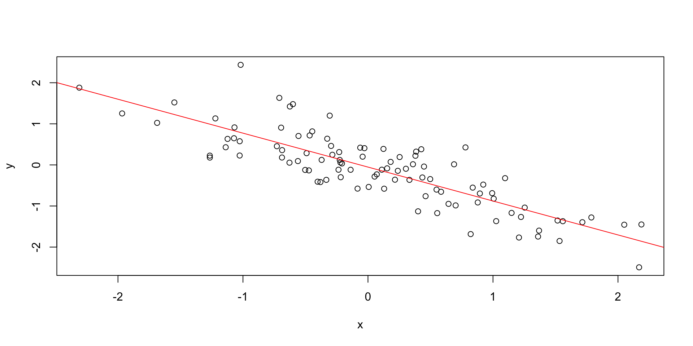

Week 8: Regression Analysis
KIN 610 - Spring 2023
Example: Parenthood Data Set
- Data set contains measures of sleep and grumpiness for Dani
- Hypothesis: less sleep leads to more grumpiness
- Scatterplot shows a strong negative correlation (r = -.90)

Linear Regression in jamovi
- We can use jamovi to estimate a linear regression model from the data
- We need to specify the
dependent variableand thecovariate(s)in the analysis - jamovi will output the estimated coefficients and other statistics

Doing it in jamovi

- jamovi can estimate multiple regression models easily
- We just need to add more variables to the
Covariatesbox in the analysis - jamovi will output the estimated coefficients and other statistics for each predictor variable
- The Table shows the coefficients for dani.sleep and baby.sleep as predictors of dani.grump
Output

Interpretation

Conclusion
- The current regression model may not be the best fit for the data
- Dropping
baby.sleeppredictor entirely mayimprovethe model
- The model performs significantly better than chance
\(F(2,97) = 215.24\), \(p< .001\)
\(R^2 = .81\) value indicates that the regression model accounts for 81% of the variability in the outcome measure
- Individual Coefficients
baby.sleepvariable has no significant effectAll work in this model is being done by the
dani.sleepvariable
Checking for linearity

Checking Linearity
- It is important to check for the linearity of relationships between predictors and outcomes.
Plotting Relationships
- One way to check for linearity is to plot the relationship between
predictedvalues andobservedvalues for the outcome variable.
Using Jamovi
- In Jamovi, you can save predicted values to the dataset and then draw a scatterplot of observed against predicted (fitted) values.
Interpreting Results
- If the plot looks approximately linear, then it suggests that your model is not doing too badly. However, if there are big departures from linearity, it suggests that changes need to be made.
Checking for linearity, cont.

To get a more detailed picture of linearity, it can be helpful to look at the relationship between predicted values and residuals.
Using Jamovi
- In Jamovi, you can save r
esidualsto the dataset and then draw a scatterplot ofpredictedvalues againstresidual values.
Interpreting Results
- Ideally, the relationship between predicted values and residuals should be a straight, perfectly horizontal line. In practice, we’re looking for a reasonably straight or flat line. This is a matter of judgement.
Checking for normality (residuals)

Regression models rely on a normality assumption: the residuals should be normally distributed.
Using Jamovi
- In Jamovi, you can draw a QQ-plot via the ‘Assumption Checks’ - ‘Assumption Checks’ - ‘Q-Q plot of residuals’ option.
Interpreting Results
- The output shows the standardized residuals plotted as a function of their theoretical quantiles according to the regression model. The dots should be somewhat near the line.
Checking for normality (residuals), cont.


Checking Relationship between Predicted Values and Residuals
- In Jamovi, you can use the ‘Residuals Plots’ option to check the relationship between predicted values and residuals.
- The output provides a scatterplot for each
predictor variable, theoutcome variable, and thepredicted valuesagainst residuals.
Interpreting Results
We are looking for a fairly uniform distribution of dots with no clear bunching or patterning.
- The dots are fairly evenly spread across the whole plot
Issues with the relationship between predicted values and residuals?
- Transform one or more of the variables (Box-Cox Transform in jamovi)
Checking for equality of variance

Regression models make an assumption of equality (homogeneity) of variance.
- This means that the variance of the residuals is assumed to be constant.
Plotting Equality of Variance in Jamovi
- To check this assumption in Jamovi, first calculate the square root of the absolute size of the residual.
- Compute this new variable using the formula
SQRT(ABS(Residuals))
- Compute this new variable using the formula
- Then plot this against the predicted values.
- The plot should show a straight horizontal line running through the middle.
Checking for Collineary

- Variance Inflation Factors (VIFs) can be used to determine if predictors in a regression model are too highly correlated with each other.
- Each predictor has an associated VIF.
- In Jamovi, click on the ‘Collinearity’ checkbox in the ‘Regression’ - ‘Assumptions’ options to see VIF values.
- Interpreting VIF
- A VIF of 1 means no correlation among the predictor and the remaining predictor variables
- VIFs exceeding 4 warrant further investigation
- VIFs exceeding 10 are signs of serious multicollinearity requiring correction
Checking for outliers

- Used in regression analysis to identify influential data points that may negatively affect your regression model
- Datasets with a large number of highly influential points might not be suitable for linear regression without further processing such as outlier removal or imputation
- Identifying Outliers
- A general rule of thumb: Cook’s distance greater than 1 is often considered large
- What if the value is greater than 1?
remove the outlier and run the regression again
How? In jamovi you can save the Cook’s distance values to the dataset, then draw a boxplot of the Cook’s distance values to identify the specific outliers.